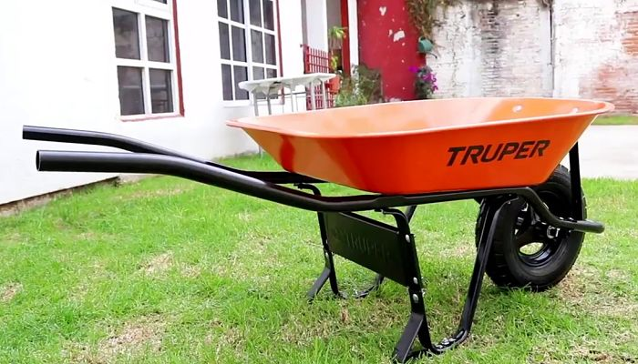

Carretilla
Some quick example text to build on the card title and make up the bulk of the card's content.
Agregar
Some quick example text to build on the card title and make up the bulk of the card's content.
AgregarPodadoras estilo yunque cortadas con una hoja afilada que se une a una superficie plana, similar a un cuchillo en una tabla. Las podadoras de bypass cortan con una cuchilla afilada que pasa por una superficie plana de bordes afilados, más parecida a las tijeras.
AgregarSchmidt también recomienda la paleta para tulipanes Garrett Wade. Sus afiladas cuchillas cortan con facilidad las raíces difíciles, lo que lo hace ideal para plantar bulbos o alrededor de árboles.
AgregarLos mangos largos proporcionan la palanca que se necesita para cortar ramas de hasta una pulgada o más de diámetro. Hay tipos de yunque y bypass, al igual que las podadoras. Las manijas generalmente miden de 16 a 36 pulgadas.
AgregarSe recomiendan los guantes de zorro. Están hechos de tejido deportivo de alta tecnología que es resistente al agua, transpirable, y proporcionan un ajuste de forma que se ha descrito como una “segunda piel”.
AgregarLa Boquilla para Manguera Ultimate Hose de Bon Aire es ligera y tiene un cierre en cada extremo del rango de pulverización. La boquilla tipo manguera va de un flujo de luz a una ducha de empapado, y puede ser usada para limpiar el concreto cuando se ajusta a una corriente casi sólida.
AgregarEstas palas cuadradas de mango corto son caballos de trabajo de jardín. Facilitan el trabajo de cavar agujeros para plantas, ribetear, levantar césped y mover pequeños montones de tierra de un área a otra. Esta herramienta puede ser más cara, pero una buena pala te durará el resto de tu vida de jardinero.
AgregarEs recomendado el rastrillo ajustable para hojas de jardín Gardenrite. La cabeza del rastrillo se expande de 7 a 22 pulgadas, y cuando se almacena en posición plegada, ocupa menos espacio.
AgregarExisten 2 tipos básicos de regaderas, de plástico o de metal. Hay cientos de estilos, colores, tamaños y opciones de boquillas.
AgregarLa paisajista Genevieve Schmidt recomienda la horquilla de excavación Radius Garden 203 Pro Ergonomic Steel. Las púas cuadradas de acero inoxidable son resistentes a la oxidación y el mango ergonómico tiene un agarre antideslizante.
AgregarTu tipo de jardín dictará qué tipo de azadón es mejor para ti. Un jardín de vegetales puede requerir una azada ancha y resistente. Si tienes jardines perennes, un tacto más delicado y una azada más delgada pueden ser requeridos. Las azadillas son útiles en la preparación de jardines y parterres de flores y en la tala de malezas.
AgregarLa jardinera de cocina y autora de libros de cocina Jeanne Kelley recomienda la varita para la lluvia de un solo toque de Dramm. El brazo en ángulo le permite alcanzar bajo el follaje de plantas delicadas y también en cestas colgantes. La válvula se desliza fácilmente con sólo el pulgar.
Agregar